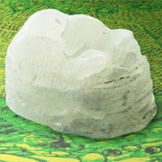

Nguồn gốc tên gọi hệ điều hành Windows
- 298 Thứ năm, 17/2/2022, 12:26 (GMT+7)
Một nhà lãnh đạo tiếp thị của Microsoft chọn "Windows" làm tên hệ điều hành máy tính vì từ này được dùng thường xuyên vào thời kỳ manh nha giao diện đồ họa. Với sự phát triển của công nghệ hiện đại, máy tính xuất hiện phổ biến trong đời sống hàng ngày, Microsoft Windows trở thành cái tên quen thuộc. Hầu hết chúng ta từng sử dụng, hoặc ít nhất là nghe đến hệ điều hành này. Có bao giờ bạn thắc mắc: Vì sao tên của một hệ điều hành máy tính lại là "cửa sổ" ? Trang Howtogeek cho biết nguồn gốc tên gọi Windows có từ khoảng 40 năm trước.
Phiên bản tiền nhiệm của Windows
Năm 1981, Microsoft bắt đầu phát triển những cấu trúc thô sơ, tiền đề của các tính năng trên Windows sau này. Ban đầu, chương trình có tên Interface Manager. Về cơ bản, đó là một giao diện đồ họa, hoạt động bên trên hệ điều hành MS-DOS.
Microsoft đã chọn Windows là tên gọi của chương trình quản lý giao diện đồ họa đa nhiệm. (Ảnh: Microsoft).
Người dùng có thể điều khiển trực quan bằng chuột máy tính, thay vì thao tác hoàn toàn trên dòng lệnh. Nó cũng hỗ trợ đa nhiệm bằng cách hiển thị đồng thời các ứng dụng khác nhau trong mỗi hộp, nằm theo từng vùng của màn hình. Thiết kế này được Xerox PARC tiên phong phát triển trên các máy tính Alto và Star, sau đó Apple cải tiến thêm.
Vào thời điểm đó, ngành công nghiệp máy tính cá nhân bắt đầu phổ biến việc xây dựng giao diện đồ họa đa nhiệm. Những hộp chương trình hiển thị trên màn hình được gọi là "windows" (cửa sổ) và phần mềm quản lý chúng có tên "windowing systems"(hệ thống cửa sổ).
Đầu những năm 1980, có nhiều nhà cung cấp phần mềm loại này cho máy tính cá nhân, gồm IBM với TopView, Digital Research với GEM và VisiCorp với Visi On. Interface Manager của Microsoft cũng là một trong số đó.
Windows ra đời
Năm 1982, Microsoft thuê một Phó chủ tịch tiếp thị tên Rowland Hanson. Ông từng là một nhân vật kỳ cựu trong ngành mỹ phẩm. Hanson mang đến một góc nhìn mới, giúp định hình thương hiệu của công ty bằng cách đặt tên Microsoft trước các sản phẩm, chẳng hạn như Microsoft Word và Microsoft Excel.
Vỏ hộp đựng một chiếc đĩa chứa hệ điều hành Windows 1.01, phát hành vào năm 1985. (Ảnh: Microsoft).
Trong khi nghiên cứu tên gọi mới cho Interface Manager, Hanson đọc các bài báo nói về làn
sóng hệ thống đa nhiệm trên máy tính cá nhân và đi tìm điểm chung của chúng. Ông nhận thấy
thuật ngữ "cửa sổ" được sử dụng rất nhiều khi nói về ứng dụng và chương trình quản lý.
Vì vậy, ông đã chọn Windows là tên gọi mới cho hệ điều hành máy tính của Microsoft. Mỗi khi
có ai đó nhắc đến hệ thống giao diện đồ họa đa nhiệm với các cửa sổ ứng dụng, họ sẽ vô tình
quảng bá cho Windows.
Cuối cùng Bill Gates quyết định phát triển Interface Manager trở thành Windows. Từ đó,
Microsoft Windows ra đời và tồn tại đến ngày nay.
Gã khổng lồ xứ Redmond giới thiệu Windows vào ngày 10/11/1983 — trước khi sản phẩm sẵn sàng
xuất xưởng — nhằm thu hút các nhà cung cấp phần cứng và phần mềm, vốn cũng đang làm việc
trên một số hệ thống quản lý giao diện khác nhau.
Khi Windows 1.01 ra mắt vào năm 1985, nó không phải là một sản phẩm đột phá, nhưng theo thời
gian, phần mềm này đã dần phát triển thành một hệ điều hành độc lập với MS-DOS.
Ngày nay, Microsoft Windows đã trở thành một thương hiệu khổng lồ. Hệ điều hành này mang đến
hàng tỷ USD cho tập đoàn mẹ và sẽ tiếp tục là sản phẩm chủ chốt trong thời gian tới
Cập nhật: 17/02/2022 Zing
- 298 Thứ năm, 17/2/2022, 12:26 (GMT+7)
-  Vật chất rắn chắc nguồn gốc thực vật: Thay được nhựa, dùng trong in 3D hay đúc khuôn đều được
-
 Trải nghiệm cưới trong vũ trụ ảo metaverse
Trải nghiệm cưới trong vũ trụ ảo metaverse -
 Nguồn gốc tên gọi hệ điều hành Windows
Nguồn gốc tên gọi hệ điều hành Windows - Vật chất rắn chắc nguồn gốc thực vật: Thay được nhựa, dùng trong in 3D hay đúc khuôn đều được
-
Trải nghiệm cưới trong vũ trụ ảo metaverse
-
Nguồn gốc tên gọi hệ điều hành Windows
- Vật chất rắn chắc nguồn gốc thực vật: Thay được nhựa, dùng trong in 3D hay đúc khuôn đều được
-
Trải nghiệm cưới trong vũ trụ ảo metaverse
-
Nguồn gốc tên gọi hệ điều hành Windows
- Vật chất rắn chắc nguồn gốc thực vật: Thay được nhựa, dùng trong in 3D hay đúc khuôn đều được
-
Trải nghiệm cưới trong vũ trụ ảo metaverse
-
Nguồn gốc tên gọi hệ điều hành Windows